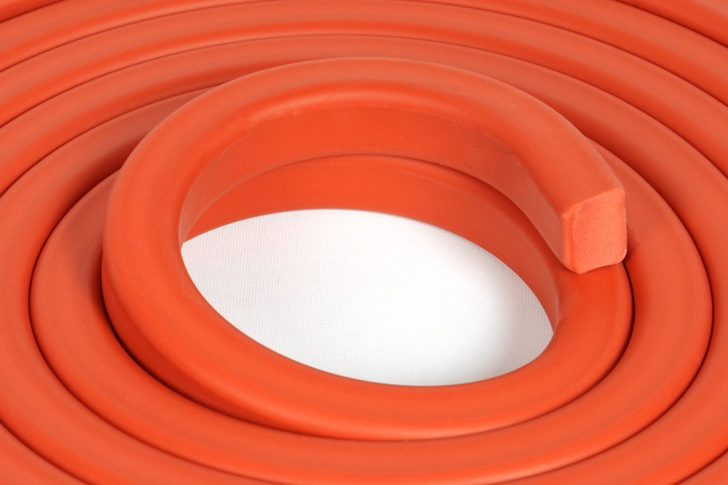
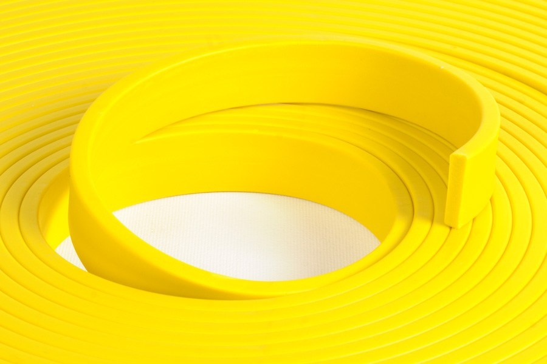
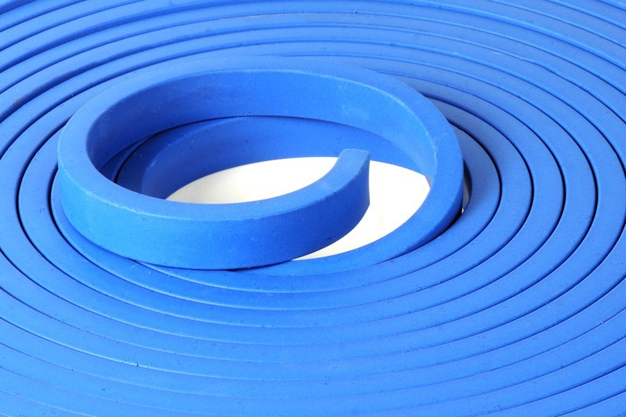
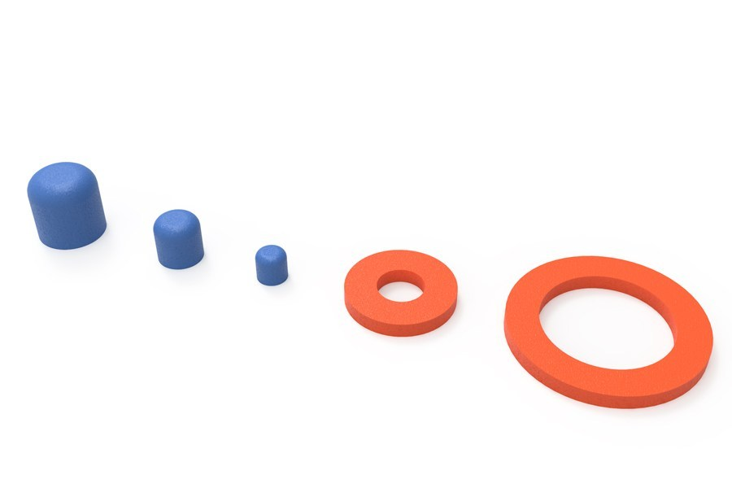

ACR Hydrophilic Waterstop Tape, Plugs and Rings
New generation high performance waterstops which expanding up to 900% when in contact with water.

ACR-300 Hydrophilic Waterstop Tape
- Tap water, wet/dry difference ≥ 300%
- Concrete water (14 days) ≥ 200%
- 3% salt water (14 days) ≥ 100%
- Цвет: красный

ACR-600 Hydrophilic Waterstop Tape
- Tap water, wet/dry difference ≥ 600%
- Concrete water (14 days) ≥ 400%
- 3% salt water (14 days) ≥ 200%
- Цвет: жёлтый

ACR-900 Hydrophilic Waterstop Tape
- Tap water, wet/dry difference ≥ 1300%
- Rain water (14 days) ≥ 900%
- Concrete water (14 days) ≥ 600%
- 3% salt water (14 days) ≥ 200%
- 5% salt water (14 days) ≥ 260%
- 10% salt water (14 days) ≥ 240%
- Water pressure resistance (14 days): 7 bar
- Цвет: синий

PLUGS & RINGS
- Day 7 ≥ 300%
- Wet/dry difference ≥ 300%
- Water pressure resistance (14 days): 7 bar
- Цвет: красный, синий